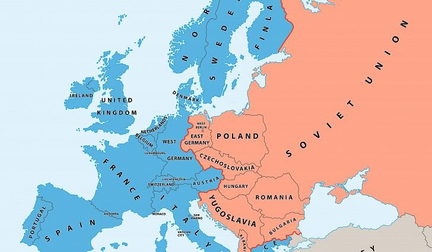

Cold War | 16 Nov 2019
Recently, 30th anniversary of the fall of the Berlin Wall (which was brought down on 9/11/1989) was celebrated which had marked a pivotal event in the Cold War Era.
What is Cold War?
- The Cold War was a period (1945-1991) of geopolitical tension between the Soviet Union and its satellite states (the Eastern European countries), and the United States with its allies (the Western European countries) after World War II.
- Post World War II, the world got divided into two power blocs dominated by two superpowers viz. the Soviet Union and the US.
- The two superpowers were primarily engaged in an ideological war between the capitalist USA and the communist Soviet Union.
- The term "Cold" is used because there was no large-scale fighting directly between the two sides.
Note:
- The Cold War was between Allied countries (UK, France etc. who were led by the US) and Soviet Union.
- Soviet Union
- The Soviet Union, officially known as the Union of Soviet Socialist Republics (USSR).
- It is the world’s first Communist state that was established in 1922.
Reasons of Cold War
Durning the World War Allied countries (US, UK and France) and Soviet Union fought together against the Axis powers (Nazi Germany, Japan, Austria). However, this wartime alliance could not workout after World War II, due to multiple factors.
Potsdam conference
- The Potsdam conference was held at Berlin in 1945 among US, UK and Soviet Union to discuss :
- Immediate administration of defeated Germany.
- Demarcation of boundary of Poland.
- Occupation of Austria.
- Role of the Soviet Union in Eastern Europe.
- Soviet Union wanted some portion of Poland (bordering Soviet Union) to be maintained as a buffer zone. However, the USA and UK didn't agree to this demand.
- Also, the USA did not inform the Soviet Union about the exact nature of the atomic bomb, dropped on Japan. This created suspicion in Soviet Union about the intentions of western countries, embittering of the alliance.
- This created suspicion in the Soviet leadership.
Truman's Doctrine
- Truman Doctrine was announced on March 12, 1947,by US President Harry S. Truman.
- The Truman Doctrine was a US policy to stop the Soviet Union’s communist and imperialist endeavors, through various ways like providing economic aid to other countries.
- For example, US appropriated financial aid to support the economies and militaries of Greece and Turkey.
- Historians believe that the announcement of this doctrine marked the official declaration of the Cold War.
Iron Curtain
- Iron Curtain is the political, military, and ideological barrier erected by the Soviet Union after World War II to seal off itself and its dependent eastern and central European allies from open contact with the West and other noncommunist areas.
- On the east side of the Iron Curtain were the countries that were connected to or influenced by the Soviet Union, while on the west side were the countries that were allies of the US, UK or nominally neutral.

Important Events of the Cold War
Berlin Blockade 1948
- As the tension between Soviet Union and Allied countries grew, Soviet Union applied Berlin Blockade in 1948.
- The Berlin Blockade was an attempt by the Soviet Union to limit the ability of Allied countries to travel to their sectors of Berlin.
- Further, on August 13, 1961, the Communist government of the German Democratic Republic began to build a barbed wire and concrete wall (Berlin Wall) between East and West Berlin.
- It primarily served the objective of stemming mass emigration from East Berlin to West Berlin.
- Except under special circumstances, travelers from East and West Berlin were rarely allowed across the border.
- This Berlin Wall served as a symbol of the Cold War (US and Soviet Union), until its fall in 1989.
History of the Berlin wall
- Allied countries (US, UK, France) and Soviet Union together defeated Nazi Germany in World War II in 1945, after which Yalta and Potsdam conferences (1945) were held between Soviet Union and Allied countries to decide the fate of Germany’s territories.
- At the conference, Germany was to be divided into zones under Russian, American, British and French influence.
- The eastern part of the country went to the Soviet Union, while the western part went to the United States, Great Britain and France.
- Berlin, as the capital, was to be likewise split. However, Berlin happened to be in the middle of the Russian zone.
- The three Allied zones got merged and became the Federal Republic of Germany (FRG) or West Germany while the former Soviet occupation zone became the German Democratic Republic (GDR) or East Germany.
- The division of Berlin was the main bone of contention between USSR and Allied countries, as West Berlin became an island within Communist East Germany.
- Berlin Wall fell on 9/11/1989, marking a symbolic end to the cold war.
The Marshall Plan vs The Cominform
- The Marshall Plan
- In 1947, American Secretary of State George Marshall, unveiled European Recovery Programme (ERP), which offered economic and financial help wherever it was needed.
- One of the aims of the ERP was to promote the economic recovery of Europe. However, this was an economic extension of the Truman Doctrine.
- The Cominform
- The Soviet Union denounced the whole idea of Marshall Plan as 'dollar imperialism.
- Therefore, the Cominform (the Communist Information Bureau) - was launched in 1947, as the Soviet response to the Marshall Plan.
- It was an organization to draw together mainly Eastern Europe countries.
NATO vs Warsaw Pact
- NATO (North Atlantic Treaty Organization)
- The Berlin blockade showed the West's military unreadiness and frightened them into making definite preparations.
- Therefore, in 1948, mainly the countries of western Europe signed the Brussels Defence Treaty, promising military collaboration in case of war.
- Later on Brussels Defence Treaty was joined by the USA, Canada, Portugal, Denmark, Iceland, Italy and Norway. This led to the formation of the North Atlantic Treaty Organization (NATO) in April 1949.
- NATO countries agreed to regard an attack on any one of them as an attack on all of them, and placing their defence forces under a joint command.
- Warsaw Pact
- The Warsaw Pact ( 1955) was signed between Russia and her satellite states shortly after West Germany was admitted to NATO.
- The Pact was a mutual defense agreement, which the Western countries perceived as a reaction against West Germany's membership of NATO.
Space Race
- Space exploration served as another dramatic arena for Cold War competition.
- In 1957, Soviet Union launched Sputnik I, the world’s first artificial satellite and the first man-made object to be placed into the Earth’s orbit.
- In 1958, the U.S. launched its own satellite called Explorer I.
- However, this space race was won by the US, when it successfully landed, the first man (Neil Armstrong) on the surface of the moon in 1969.
Arms Race
- The containment strategy of US provided the rationale for an unprecedented arms buildup in the United States, reciprocated by Soviet Union.
- Development of nuclear weapons took place on a massive scale and the world entered into the age of nuclear age.
The Cuban Missiles Crisis, 1962
- The Cuba got involved in the Cold War when US broke off its diplomatic relations with Cuba in 1961, and Soviet Union increased their economic aid to Cuba.
- In 1961, the USA planned Bay of Pigs invasion of Cuba, intending to overthrow the head of Cuban state (Fidel Castro), who was backed by the Soviet Union . However, the operation failed.
- Fidel Castro then appealed to the Soviet Union for military help, to which Soviet Union decided to set up a nuclear missile launchers in Cuba aimed at the USA.
- Cuban Missile Crisis, brought two superpowers on the brink of a nuclear war. However, the crisis was averted diplomatically.
End of the Cold War
In 1991, Soviet Union collapsed due to multiple factors which marked the end of the Cold War, as one of the superpowers was weakened.
Reasons of the collapse of the Soviet Union
- Military reasons
- The space race and the arms race drained a considerable proportion of Soviet Union's resources for military needs.
- Policies of Mikhail Gorbachev
- In order to kick start moribund Soviet economy, Gorbachev instituted the policies of glasnost (“openness”) and perestroika (“restructuring”).
- Glasnost was intended for liberalization of the political landscape.
- Perestroika intended to introduce quasi free market policies in place of government-run industries.
- It allowed more independent actions from various ministries and introduced many market-like reforms.
- Rather than sparking a renaissance in Communist thought, these steps opened the floodgates to criticism of the entire Soviet apparatus.
- The state lost control of both the media and the public sphere, and democratic reform movements gained steam throughout the Soviet Union.
- Also, there was growing disenchantment in the public due to falling economy, poverty, unemployment, etc. This made the people of the Soviet Union attracted to western ideology and way of life.
- In order to kick start moribund Soviet economy, Gorbachev instituted the policies of glasnost (“openness”) and perestroika (“restructuring”).
- Afghanistan War
- The Soviet-Afghan (1979–89) was another key factor in the breakup of the Soviet Union, as it drained the economic and military resources of Soviet Union.
Conclusion
The end of the Cold War marked the victory of the US and the bipolar world order turned into a unipolar.
However, over the last decade, the position of the US as the world's most powerful state has appeared increasingly unstable. The US invasions of Afghanistan and Iraq, non-traditional security threats, global economic instability, the apparent spread of religious fundamentalism, together with the rise of emerging economic powers (like Japan, Australia, India, China etc.) have made the world look more multipolar and has led many to predict the decline of the west and the rise of the rest.